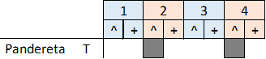
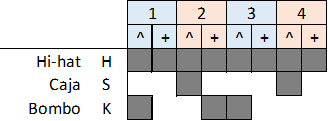
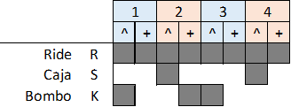
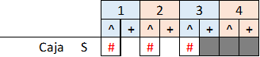
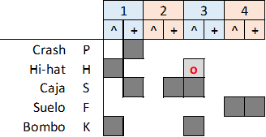
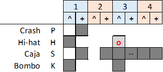
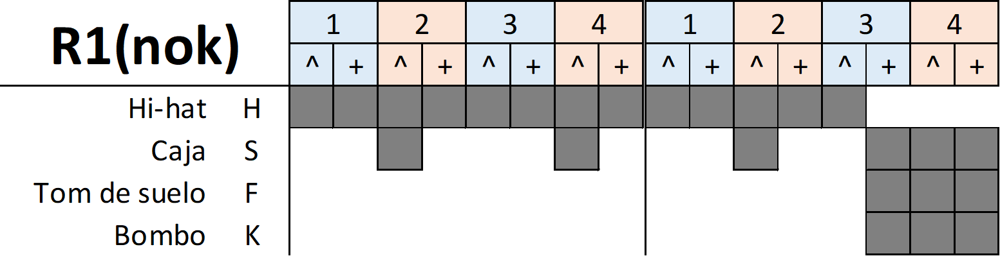
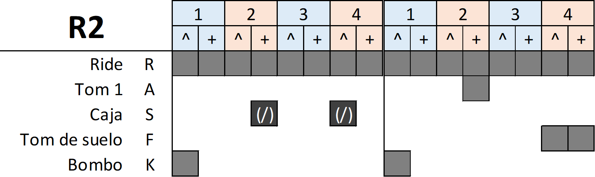
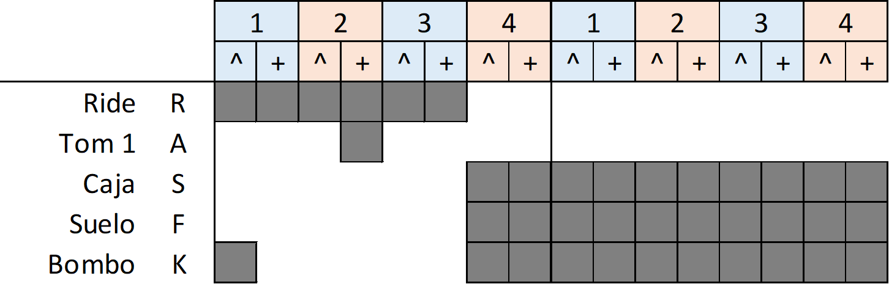

(Intro: 2) Intro: Do Fa Do Sol (Intro: 8) Más bonita que ninguna, ponía a la peña de pie, con más noches que la luna, estaba todo bien. Probaste fortuna en 1996, de Málaga hasta La Coruña, durmiendo en la estación de tren. (Intro: 6) La estrella de los tejados, lo mas rock & roll de por aquí, (R1(nok): 1) los gatos andábamos colgados, Lady Madrid. (R1: 8) Más viciosa que ninguna, pero tan difícil de coger, tuvo un piso en las alturas, "handle with care", (R1: 8) Probaste fortuna con héroes de barrio y conmigo también, algunos todavía dudan, si vas a volver. (Br1: 1) (R1-ride: 7) La estrella de los tejados, lo mas rock & roll de por aquí los gatos andábamos colgados, Lady Madrid.(Br1: 1) (R1-ride: 6) Pitillos ajustados, era The Burning, Ronaldos y Lou Reed, (R2: 1) y nunca hablaron los diarios de Lady Madrid. (R2: 2) (R2+t: 1) Rem Sol Rem Sol Mi Lam Sol7 (R1-ride: 7) La estrella de los tejados, lo mas rock&roll de por aquí los gatos andábamos colgados, Lady Madrid.(Br2: 1) (R1-ride: 6) Pitillos ajustados, era The Burning, Ronaldos y Lou Reed, (Br2: 1) y nunca hablaron los diarios de Lady Madrid. (R1-ride: 4) Lady Madrid, Lady Madrid. (Br2: 1)